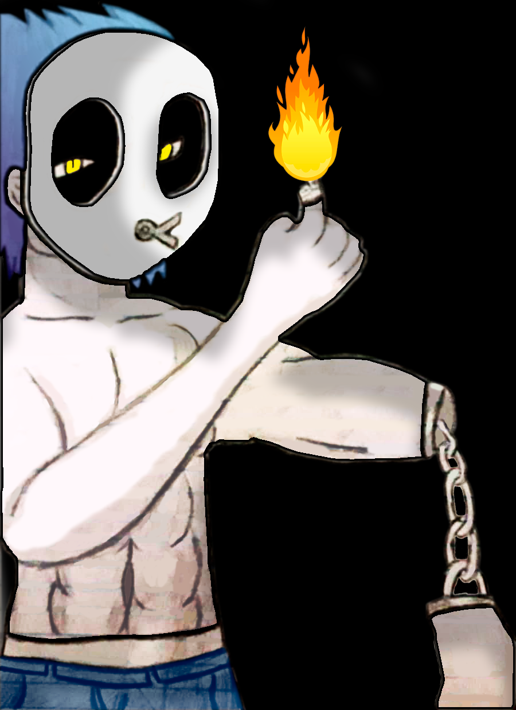
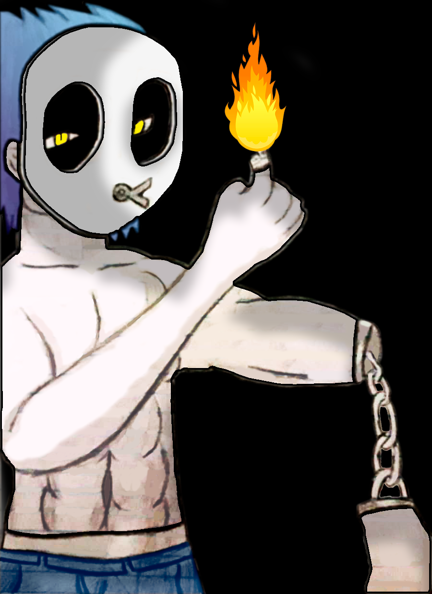

Saju
Saju is the leader of the four main protagonists. In his childhood, Saju's mother put him on a martial art dojo, so he could
learn how to protect himself. Since the story is RPG oriented, we can say that Saju is the grappler of the party, having a
well-rounded stat tree, and the best defense of the four. His personality is (). He loves to fight, and frequently put the
party in danger for not having fears.
Kashi
Kashi was abandoned by his parents when he was a baby, probably due to financial crisis. He was left on a church`s door and
raised for a couple of years by a priest. That church was soon plundered and the bishop got killed by one of the robbers.
The gang`s leader found Kashi and decided to take him. Kashi then spent the rest of his childhood and most of his teenage as
a member of a thieves gang, but decided to leave and leave on his own after gathering some money. The reason for this change
of hearth was due to what happened on one of his missions. Kashi was charged with a mission to climb one of the city`s tallest
mountains, to find a rare bird (creature) nest and steal one of its eggs. Kashi managed to find and reach the nest, but he was
then attacked by the birds’ mother, and Kashi ended up losing the sight of one of his eyes from the bird`s attack. That
experience made him remember the teachings of the late priest, so he decided to give up theft. Interesting enough, the gang was
not that bad at all. The gang taught Kashi most of the school`s material equivalent to what would happen in a elementary school
for his age, so Kashi was a smart kid. Kashi then decided to apply for a ordinary high school, and there was when he met Saju and
the others. For the RPG`s sake, Kashi is the “thief class. He has the highest speed status of the four.
Vito
Vito is a son of a rich family that, when reaching adulthood, asked to live on his own. He has his own house with maidens and
butlers. All his spendings are covered by his parents, so he never had to worry about money.